Сигнализатор напряжения индивидуальный касочный "Радиус"
Сигнализатор напряжения индивидуальный касочный (СНК) "Радиус" предназначен для предупреждения персонала, обслуживающего воздушные линии электропередачи (ВЛ), о приближении на опасное расстояние к токоведущим частям, находящимся под напряжением 6-10 кВ. Сигнализатор устанавливается в каски UVEX, PELTOR, Суксунского ОМЗ и другие аналогичные каски. СНК представляет собой гибкую вставку, фиксируемую враспор внутри каски с помощью вилок, над "макушкой" головы. Длинная антенна сигнализатора проходит вдоль всего ребра жесткости каски.
Сигнализатор напряжения касочный "Радиус" оснащен устройством автоматического включения и отключения (при покое каски), что повышает его надёжность, снижает энергопотребление, даёт возможность устанавливать сигнализатор "Радиус" в каску на длительный срок. Длинная антенна сигнализатора "Радиус", проходящая по всему ребру жесткости каски,обеспечивает широкую зону контроля электрического поля. Антенна СНК "Радиус" огибает верхнюю часть головы, что позволяет надежно распознавать попадание в опасную зону, в том числе при поворотах головы. Многие существующие сигнализаторы имеют короткую антенну, из-за чего они могут не срабатывать в опасной близости от токоведущих частей (из-за перекрытия антенны головой), а также переставать контролировать электрическое поле (например, около опоры). Сигнализатор "Радиус", как и любой автоматический, рекомендуется применять на опорах ВЛ в каске, надетой на голову, для четкого соблюдения дистанции срабатывания.
Порядок применения и характеристики СНК "Радиус" смотрите в Каталоге продукции.
В форме Запрос возможно уточнить цену, сроки изготовления, запросить коммерческое предложение, документы или задать вопрос.
Сигнализатор напряжения касочный «Радиус» размещается внутри каски, что исключает возможность зацепов и срыва сигнализатора с каски. Также он защищён поверхностью каски от внешнего воздействия атмосферных осадков. Звуковой сигнал СНК «Радиус» направлен внутрь каски, что позволяет значительно снизить требуемую для надёжного восприятия мощность сигнала. Сигнализатор напряжения касочный «Радиус» имеет режим повышенной чувствительности, что позволяет производить предварительную проверку с земли наличия напряжения на проводах воздушных линий 6-10 кВ, то есть использовать его как неавтоматический (ручной) сигнализатор напряжения.
У сигнализатора напряжения касочного «Радиус» имеется функция временного отключения на определенное время с последующим его автоматическим включением. Это удобно, например, при работе в распредустройствах. Существует также возможность вернуть СНК в обычный режим ранее установленного времени.
Предусмотрен контроль исправности сигнализатора напряжения касочного «Радиус» нажатием
кнопки (убран дежурный режим периодической подачи звукового сигнала, который «напрягает» при выполнении работ). В исправном сигнализаторе должна прозвучать серия коротких звуковых импульсов.
В случае разряда элемента питания СНК «Радиус» непрерывным звуковым сигналом известит о необходимости его замены.
Достоинства
- длинная антенна и широкая зона контроля электрического поля
- устанавливается внутри каски
- не имеет кнопки включения-отключения
- остаётся во включенном состоянии в течение всего времени пользования
- исключена возможность зацепов и срыва сигнализатора с каски
- нет внешнего воздействия атмосферных осадков
- звуковой сигнал направлен внутрь каски
Сертификация и гарантия
Изделие сертифицировано
Разработан и изготавливается Научно-производственным центром "Электробезопасность", г. Киров.
Поставка и организация технического обслуживания осуществляется ООО "Электробезопасность-Вятка".
Гарантийный срок эксплуатации – 2 года со дня отгрузки с предприятия-изготовителя.